데모 각본 · v1
Knows Me 데모 각본
촬영 전에 합의해야 할 것 — 무엇을 주장하고, 어떤 순서로 보여주고, 각 컷에 무엇이 담겨야 하는가.
무엇을 주장하는가
데모 전체가 이 한 문장을 증명하는 데 쓰인다.
나는 매일 엄청난 맥락을 AI에 입력한다. 내가 무엇을 걱정하는지, 왜 그 방식으로 일하는지. 그런데 세션이 끝나면 전부 사라진다.
다음 대화에서 나는 처음부터 다시 설명한다. 새로 합류한 동료도 나에게 직접 물어보는 것 말고는 방법이 없다. 기록은 분명히 남아 있는데 — 클로드 세션 수백 개, 노션 문서, 메일 — 아무도 그걸 읽지 않는다.
Knows Me는 그 흩어진 기록에서 나에 대해 지속적으로 참인 것만 뽑아 하나의 금고에 모은다. 그리고 그 금고가 나 대신 답한다. 나에게도, 내가 허락한 동료의 에이전트에게도.
수집 — 흩어진 기록을 끌어온다
0:12 – 0:55 · 미디어 6컷
보여줄 것은 "연동했다"가 아니라 이미 쌓여 있던 것이 갑자기 읽힌다는 감각이다. 클로드 세션은 이미 수백 개가 디스크에 있다. 아무도 안 읽었을 뿐.
- 원본을 먼저 보여준다. 터미널의 세션 트랜스크립트 한 조각. 사람이 읽기엔 너무 길고, 버리기엔 아까운 것.
- 연결 소스 카탈로그. Claude · Codex · Notion · Gmail이 활성, Confluence · Jira · Knox Mail은 예정. 클로드는 토큰이 필요 없다 — 이미 내 기기에 있으니까. 이 대비가 컷의 요점이다.
- 범위를 고른다. 프로젝트 목록에서 넣을 것만. 아무것도 안 고르면 전부.
- 「끝까지 수집」. 진행 토스트가 도는 동안 대시보드 숫자가 오른다.
- Notion · Gmail 연결. 토큰 한 줄. 다이얼로그 안에 발급 방법이 같이 있다는 점.
- 전송 기록. 무엇이 어떤 모델로 나갔는지 전부 남아 있다. 원칙 01을 말로 하지 않고 화면으로 증명하는 컷.
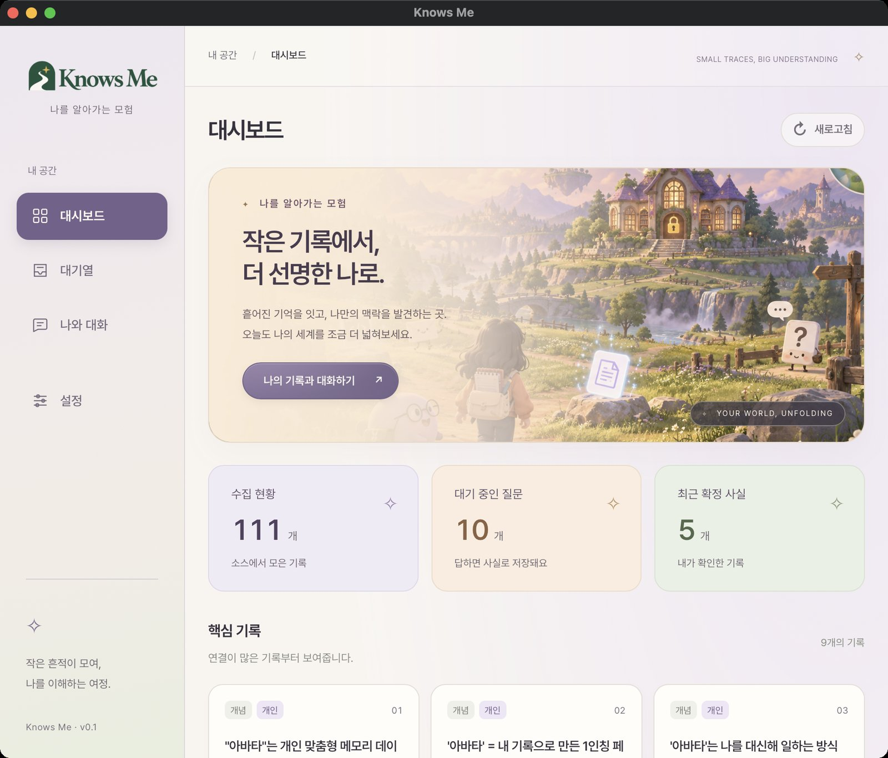
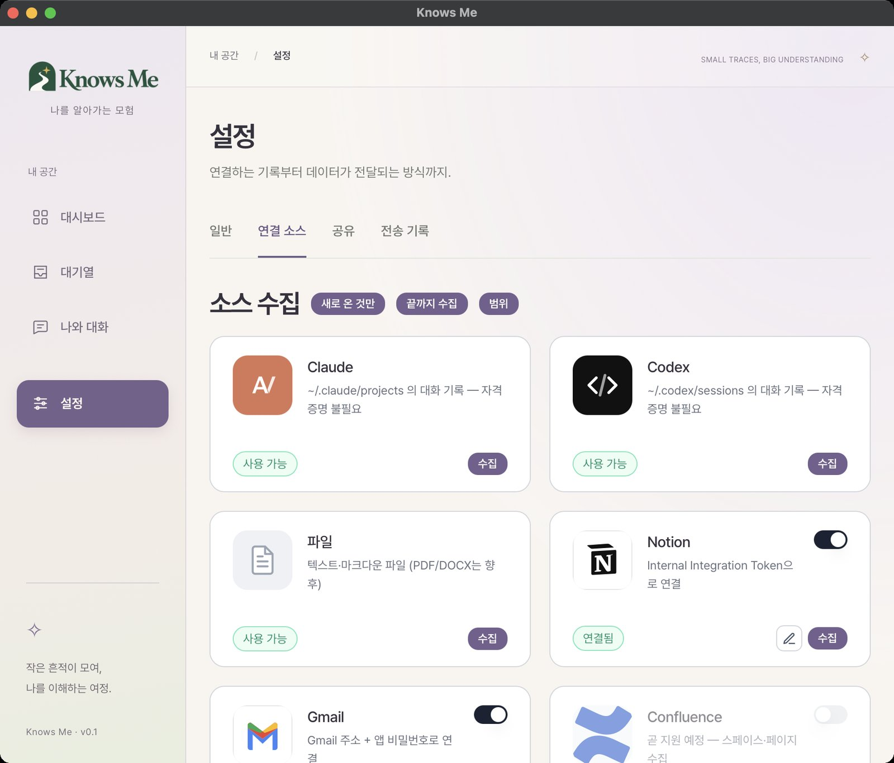
수집 중… N/M이 떠 있는 순간. 뒤에 대시보드 숫자가 같이 보이면 최고.me@example.com 같은 예시로 바꾸거나 가릴 것. 앱 비밀번호 칸은 반드시 비어 있어야 함.claude-opus-5 (로컬 Claude Code)라는 게 한 화면에 있다.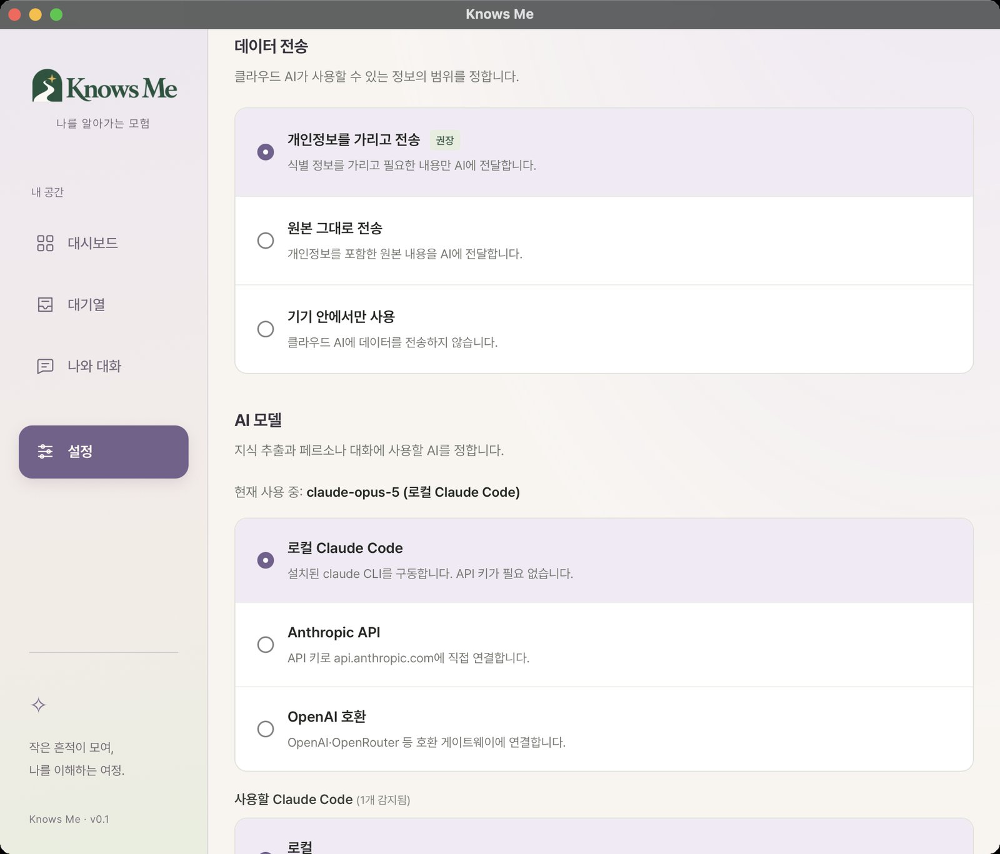
대기열 — 추측이 사실이 되는 유일한 통로
0:55 – 1:15 · 미디어 3컷
여기가 이 제품이 다른 "요약 도구"와 갈라지는 지점이다. 모델이 확신하지 못한 것은 조용히 저장되지 않는다. 질문으로 남고, 내가 답해야 사실이 된다.
데모에서는 한 질문을 실제로 답해서, 대기 숫자가 줄고 확정 숫자가 느는 것을 같은 화면에서 보여준다. 말로 설명할 필요가 없어진다.
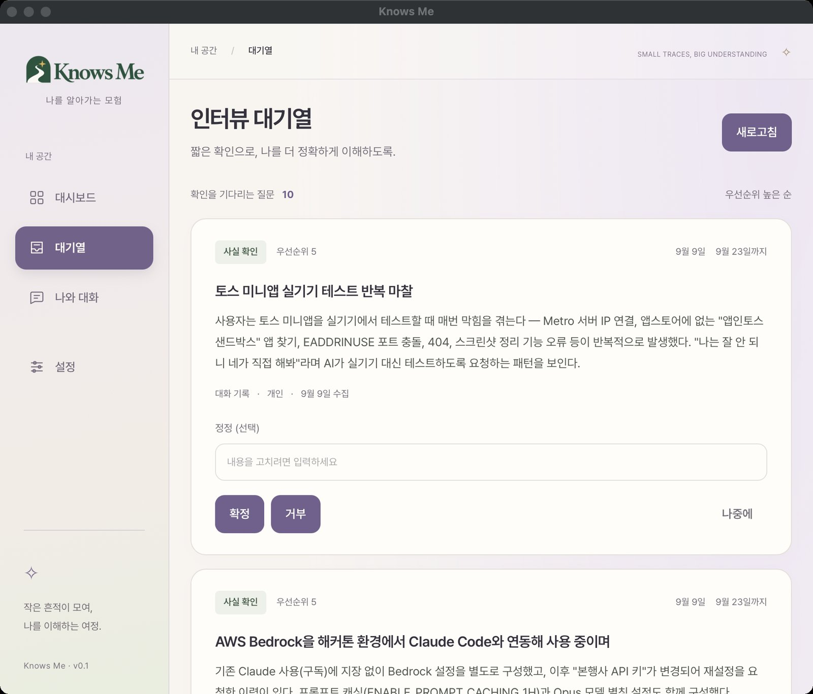
대기 중인 질문이 1 줄고 최근 확정 사실이 1 는 상태. 전후 두 장으로 찍어두면 편집이 쉬움.내 뷰 — 모인 것이 실제로 쓸모 있다
1:15 – 1:50 · 미디어 5컷
세 화면이 각각 다른 질문에 답한다. 순서를 이렇게 두는 이유가 있다 — 얼마나 모였나 → 어떻게 얽혀 있나 → 그래서 뭘 해주나. 마지막 컷이 가장 세다.
대시보드 — 얼마나 모였나
숫자 세 장(수집 현황 · 대기 중인 질문 · 최근 확정 사실)과 핵심 기록 카드. 카드마다 유형(개념·방식·진행 중), 범위(개인·업무), 공개 여부가 칩으로 붙어 있다. 공개/비공개 칩이 보이는 게 중요하다 — 03막의 MCP 장면이 여기에 걸린다.
그래프 — 어떻게 얽혀 있나
토픽 허브로 묶인 관계도. 노드를 하나 클릭해 관련 기록이 딸려 나오는 것까지 보여준다. 정적인 목록이 아니라 연결된 것이라는 인상이 이 컷의 목적.
나와 대화 — 그래서 뭘 해주나
질문은 「내가 요즘 제일 걱정하는 게 뭘까?」로 간다. 이건 검색으로 답할 수 없는 질문이다. 키워드가 아니라 마찰이 반복된 정도로 토픽을 골라야 답이 나온다. 답변에 근거 기록이 같이 붙는 것까지 한 컷에 담을 것.
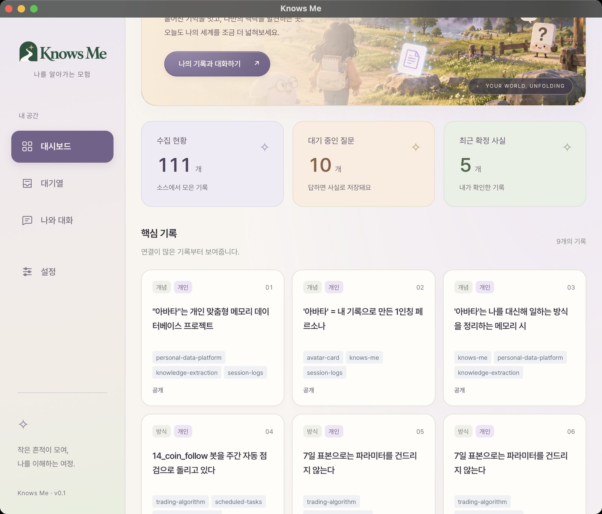
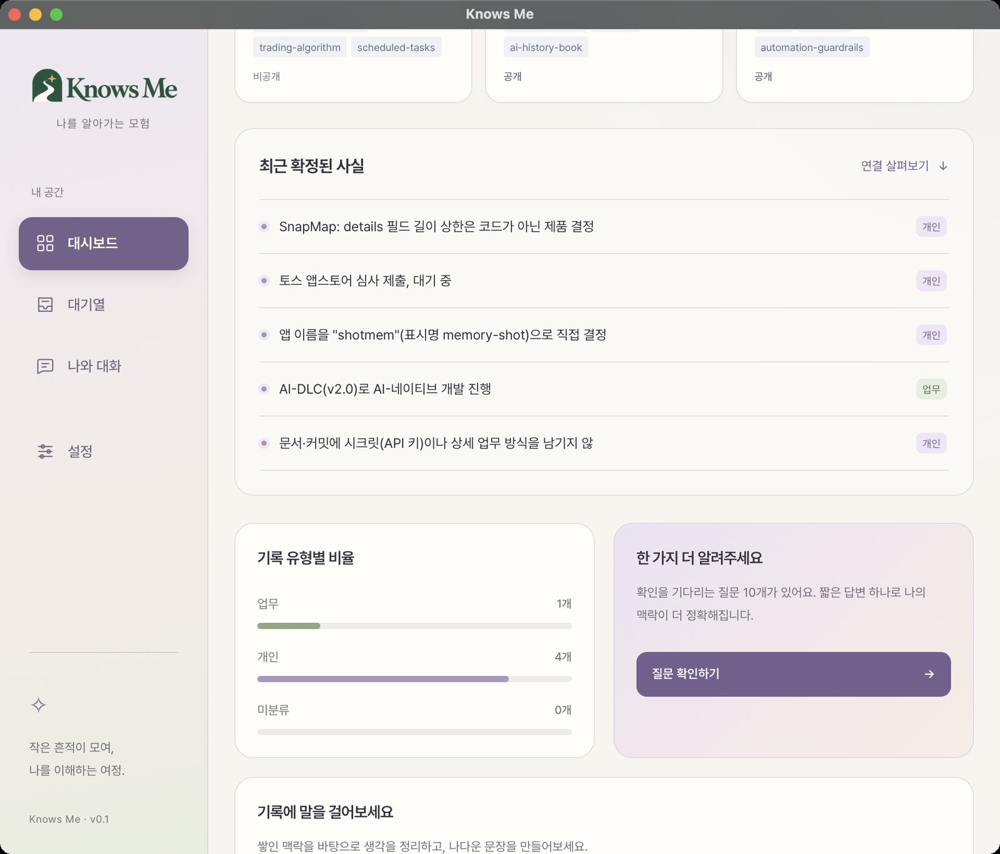
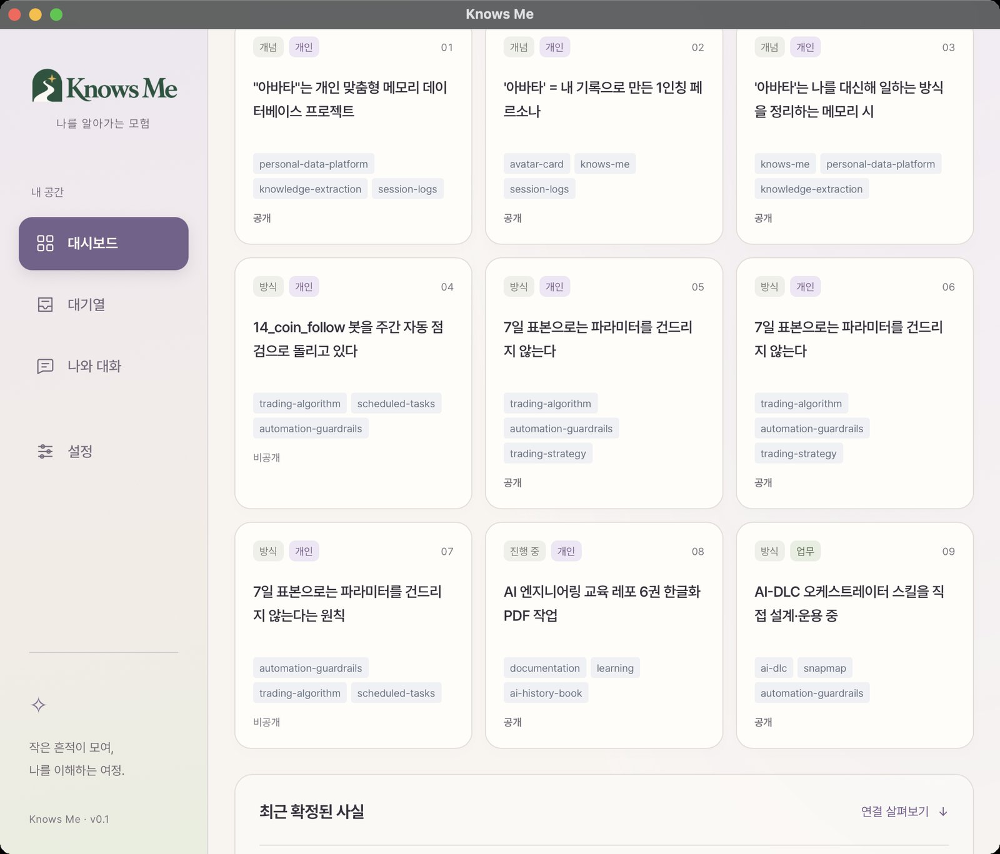

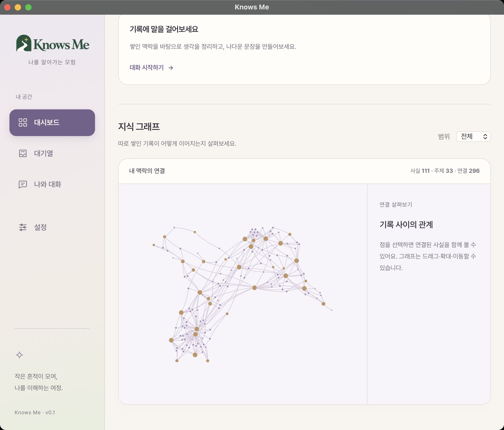
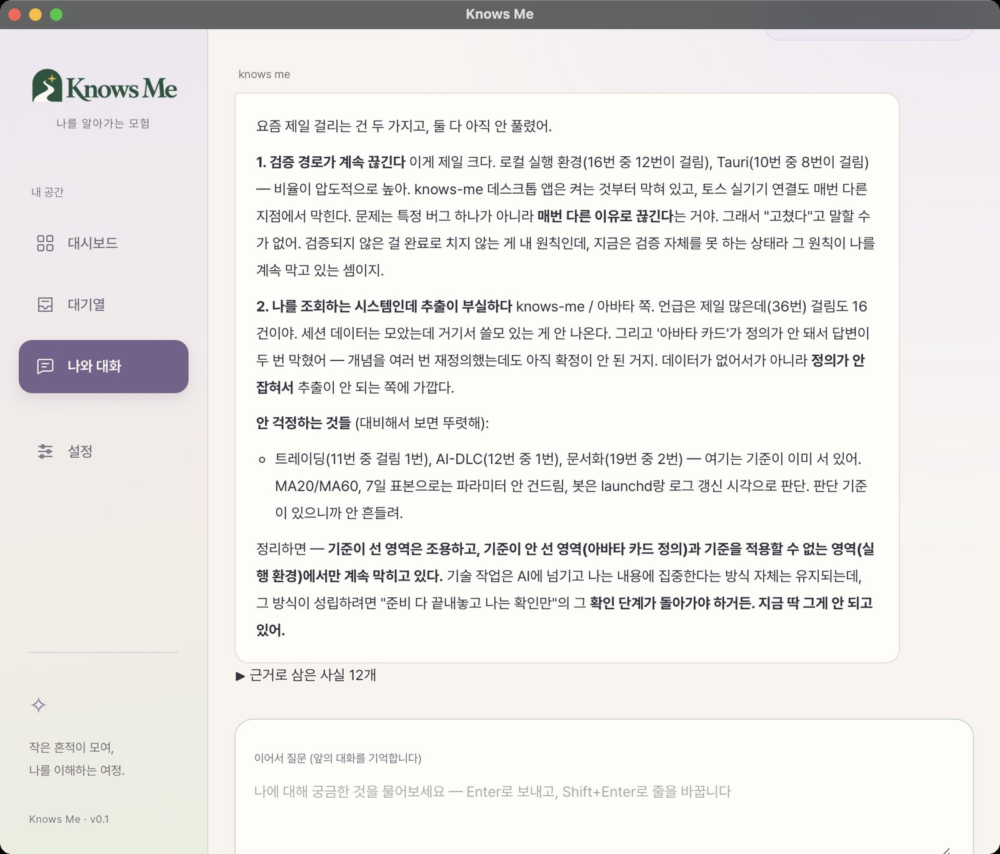
M16·M17은 6컷이 아니라 7컷이 되므로, M16을 M17의 앞 0.6초 트랜지션으로 흡수해 슬롯 하나로 묶는다.
MCP — 내가 없어도 내 지식이 답한다
1:50 – 2:25 · 미디어 3컷
여기까지는 "나를 위한 도구"였다. 이 막에서 소비자가 바뀐다. 동료가 나에게 묻는 대신, 동료의 에이전트가 내 지식에 직접 질의한다.
컷은 동료의 터미널에서 찍는다. 내 앱은 화면에 없어야 한다 — 그게 요점이니까.
# 내가 준 URL + 토큰 한 줄. 이걸로 끝.
claude mcp add --transport http jibin-knows-me \
https://<tunnel>/mcp \
--header "Authorization: Bearer <내가-발급한-토큰>"
동료: "지빈이 맡은 결제 서비스 로컬에서 어떻게 띄워?" 에이전트: (jibin-knows-me · search_knowledge) → run.sh로 띄우고, .env는 1Password의 payment-dev 항목을 씁니다. 동료: "지빈 연봉 협상 메모 있어?" 에이전트: → 그런 지식에 접근 권한이 없습니다. (forbidden)
마지막 줄이 이 막의 클라이맥스다. 거절이 기능이다. 그리고 정확히는 "거절"보다 강하다 — 부여받지 않은 범주는 존재 자체가 보이지 않는다.
claude mcp add 한 줄과 성공 출력. 토큰은 <token>으로 가릴 것.search_knowledge)이 화면에 보여야 "내 금고를 읽었다"가 성립.127.0.0.1:8766(내 에이전트용)과 8767(팀 공유용)에 떠 있다. 둘 다 루프백 전용이라 터널 없이는 밖에서 도달할 수 없다.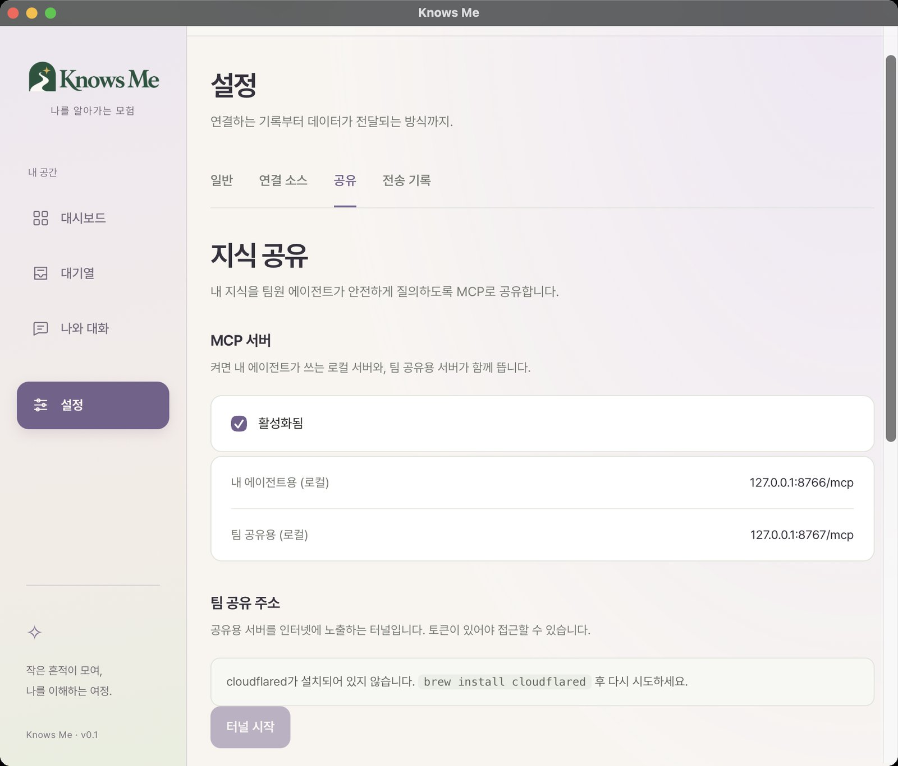
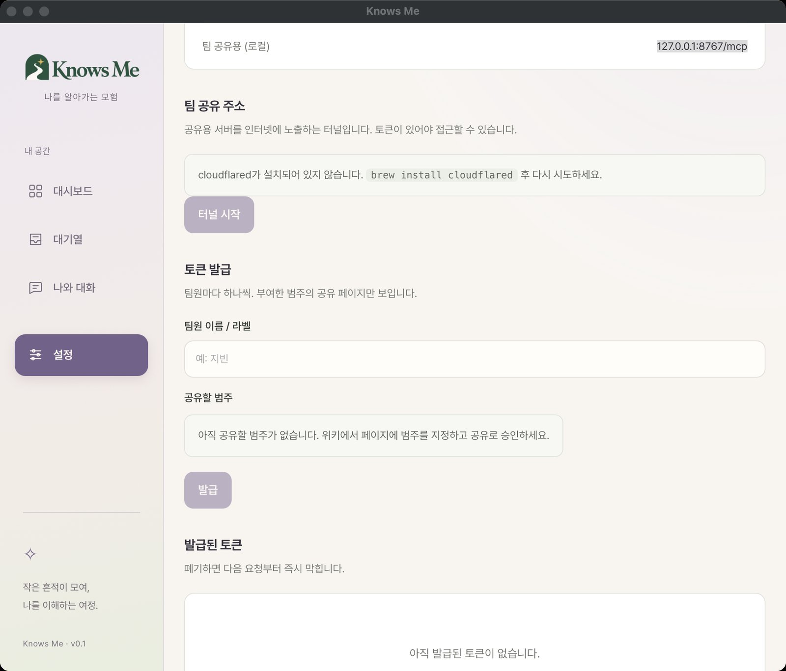
「공개」는 누가 정하는가
04막을 찍기 전에 반드시 확인할 것 — 지금 코드로는 그 장면이 성립하지 않는다.
기록마다 공개 / 비공개 칩이 붙는다. 그런데 그걸 사람이 정하지 않는다. 추출할 때 분류기가 정한다 — 프롬프트가 세 갈래를 준다:
visibility — 팀원과 공유해도 되는 내용인가?
"public" 툴링, 관례, 공개된 프로젝트 사실, 무언가를 어떻게 만들고 돌리는지
"private" 보상, 평가, 건강, 가족, 개인 재무, 채용/해고, 특정인에 대한
불만, 자격증명, 고객·파트너 신원
"unclear" 조금이라도 의심스러우면. 추측해서 "public"을 고르지 말 것 —
불확실한 항목은 물어보면 되지만, 잘못된 "public"은 유출이다.
unclear는 저장되지 않고 대기열로 간다. 기본값은 Private이고 public이 명시적으로 나왔을 때만 Shared가 된다. 즉 기본값이 새는 구조는 아니다 — 다만 오너가 승인하는 단계가 없다.
그런데 인가는 AND다
서버가 컨슈머에게 페이지를 내주는 조건은 하나가 아니라 둘이다.
visibility == Shared && category.is_some_and(|c| granted.contains(c))
// sharing/mod.rs — can_access()
추출 경로에도, 대기열 답변 경로에도 category: None뿐이다. 그래서 위 AND의 오른쪽이 항상 거짓이고, 공개로 표시된 기록조차 컨슈머에게는 보이지 않는다.
앱도 같은 말을 한다 — 토큰 발급 폼의 「공유할 범주」 칸에 "아직 공유할 범주가 없습니다. 위키에서 페이지에 범주를 지정하고 공유로 승인하세요." 그런데 페이지에 범주를 지정하는 UI가 아직 없다.
실제로 돌려본 결과
앱이 켜져 있을 때 로컬에 두 리스너가 뜬다. 오너용은 토큰 없이 전부 읽고, 팀 공유용은 토큰을 요구한다.
# 오너 리스너 — 토큰 없이, 전부 읽힘 $ curl -s 127.0.0.1:8766/mcp -d '{"method":"tools/list", ...}' • list_categories · search_knowledge · get_page · get_guide $ ... search_knowledge {"query":"수집","limit":3} {"results":[{"category":null,"title":"knows-me: Claude 세션을 먹고 자라는 아바타 데스크톱 앱", "excerpt":"Tauri(Rust src-tauri) + React 프런트엔드로 만드는 …"}, …]} $ ... list_categories {} {"categories":[]} ← 부여할 범주가 하나도 없다 # 팀 공유 리스너 — 토큰 검사 $ curl 127.0.0.1:8767/mcp → HTTP 401 $ curl 127.0.0.1:8767/mcp -H 'Bearer 아무거나' → 토큰이 유효하지 않습니다. HTTP 401
경계는 제대로 선다. 다만 통과할 수 있는 문이 아직 없다.
그래서 04막을 찍으려면
- 범주 부여가 먼저다. 페이지에
deploy,workstyle같은 범주를 붙일 수 있어야 토큰이 의미를 갖는다. 지금은 발급 폼에 고를 것이 없다. - 거절 장면은 지금도 찍힌다.
HTTP 401은 진짜다. 다만 "허용 → 답변" 쪽이 빈 결과라 대비가 안 선다. - 터널은 별개 —
cloudflared가 설치돼 있지 않다. 동료 터미널 컷을 찍으려면 필요하다.
스토리보드
미디어 20컷 · 총 2분 35초
| 타임 | 슬롯 | 화면 | 내레이션 / 자막 |
|---|---|---|---|
| 00 — 문제 · 0:00–0:12 | |||
| 0:00 | M01 | 대시보드 히어로 (블러 → 선명) | 나는 매일 AI에 내 맥락을 쏟아붓는다. |
| 0:06 | M02 | 세션 트랜스크립트 스크롤 | 그리고 세션이 끝나면 전부 사라진다. |
| 01 — 수집 · 0:12–0:55 | |||
| 0:12 | M03 | 연결 소스 카탈로그 | 기록은 이미 있다. 아무도 안 읽었을 뿐. |
| 0:20 | M04 | 수집 범위 다이얼로그 | 어디까지 읽을지는 내가 정한다. |
| 0:28 | M05 | 끝까지 수집 · 진행 토스트 | 431개 세션, 한 번에. |
| 0:36 | M06 | Notion 연결 | 노션은 토큰 한 줄. |
| 0:42 | M07 | Gmail 연결 | 메일도. |
| 0:48 | M08 | 전송 기록 | 기기 밖으로 나간 것은 전부 여기 남는다. |
| 02 — 대기열 · 0:55–1:15 | |||
| 0:55 | M13 | 대기열 목록 | 확실하지 않은 것은 저장하지 않는다. |
| 1:02 | M14 | 질문 펼침 | 대신 나에게 묻는다. |
| 1:08 | M15 | 답변 → 숫자 변화 | 내가 답해야 사실이 된다. |
| 03 — 내 뷰 · 1:15–1:50 | |||
| 1:15 | M09 | 대시보드 숫자 세 장 | 111개의 기록. |
| 1:21 | M10 | 핵심 기록 카드 | 활동 로그가 아니라, 나에 대해 참인 것. |
| 1:28 | M11 | 지식 그래프 | 그리고 그것들은 서로 얽혀 있다. |
| 1:34 | M12 | 그래프 노드 선택 | — |
| 1:40 | M17 | 나와 대화 · 답변 (M16에서 전환) | "내가 요즘 제일 걱정하는 게 뭘까?" |
| 04 — MCP · 1:50–2:25 | |||
| 1:50 | M18 | 동료 터미널 · 등록 | 여기까지는 나를 위한 도구였다. |
| 1:58 | M19 | 동료 터미널 · 질의 | 이제 동료가 나에게 묻지 않는다. 그의 에이전트가 내 지식에 직접 묻는다. |
| 2:12 | M20 | 동료 터미널 · 거절 | 내가 주지 않은 것은 보이지 않는다. |
| 마무리 · 2:25–2:35 | |||
| 2:25 | M01↺ | 대시보드로 복귀 · 워드마크 | Knows Me — 작은 흔적이 모여, 나를 이해하는 여정. |
M01은 오프닝과 클로징에 재사용하므로 실제 캡처는 19장이면 된다.
촬영 전에 해야 할 것
지금 화면을 그대로 찍으면 안 되는 이유가 하나 있다.
지금 볼트의 111개 사실은 중복 제거 수정 이전에 모은 것이다. 대시보드 핵심 기록에 7일 표본으로는 파라미터를 건드리지 않는다가 05·06·07 세 장에 그대로 겹쳐 있고, 데모에서 이건 바로 눈에 띈다.
수정은 들어갔지만 이미 저장된 사실을 소급해서 합쳐주지는 않는다. 촬영용으로는 빈 볼트에서 다시 모으는 편이 낫다. 겸사겸사 모델도 이제 Opus 5로 제대로 붙는다.
체크리스트
- 재수집 — knows-me 자기 디렉터리는 빼고. 97세션 기준 30~50분.
- 대기열을 비우지 말 것 — 02막에서 답할 질문이 최소 하나는 남아 있어야 한다.
- 공개/비공개가 섞이게 — 04막의 거절 장면이 성립하려면 비공개 기록이 실제로 있어야 한다.
- 동료 계정 하나 준비 — 04막은 남의 터미널에서 찍어야 설득력이 있다. 토큰 발급도 미리.
- 개인정보 훑기 — Gmail 주소, 실명, 사내 프로젝트명. 캡처 후 한 번 더 볼 것.
- 창 크기 고정 — 캡처 사이에 창 크기가 바뀌면 Remotion에서 컷이 튄다.
캡처 방법
아래를 실행하면 순서대로 안내하고, 창을 클릭할 때마다 한 장씩 저장한다. 건너뛰려면 s.
scratchpad/capture-shots.sh
이 문서를 만드는 쪽 셸에는 macOS 화면 기록 권한이 없어서 캡처가 거부된다(could not create image from window). 화면을 읽는 것은 되지만 파일로 남기지는 못한다. 그래서 이 한 단계만 직접 실행이 필요하다.
촬영 현황
확보 12컷 / 남은 6컷
아래 컷은 실제 앱에서 리티나 해상도(1920×1640)로 찍어 이 문서에 넣었다. 남은 것은 다이얼로그를 열어야 하거나 동료 터미널이 필요한 컷이다.
| 슬롯 | 화면 | 상태 |
|---|---|---|
| M01 | 대시보드 히어로 | 확보 |
| M03 | 연결 소스 카탈로그 | 확보 |
| M08b | 설정 · 마스킹 정책 + 모델 | 확보 (계획에 없던 컷) |
| M09 | 대시보드 숫자 세 장 | 확보 |
| M09b | 최근 확정된 사실 | 확보 (계획에 없던 컷) |
| M10 | 핵심 기록 카드 | 확보 — 단, 05·06·07이 중복 |
| M11 | 지식 그래프 | 확보 · 사실 111 · 주제 33 · 연결 296 |
| M12 | 그래프 노드 선택 | 미확보 — 아래 참고 |
| M13·M14 | 인터뷰 대기열 · 펼친 질문 | 확보 (한 컷에 둘 다 나옴) |
| M17 | 나와 대화 · 답변 | 확보 — 내용이 매우 좋음 |
| M02 | 세션 트랜스크립트 원본 | 남음 — 터미널에서 |
| M04 | 수집 범위 다이얼로그 | 남음 |
| M05 | 끝까지 수집 진행 | 남음 — 재수집할 때 같이 |
| M06·M07 | Notion · Gmail 연결 | 남음 |
| M08 | 전송 기록 | 남음 |
| M18 | 설정 · 공유 (MCP 리스너) | 확보 (계획에 없던 컷) |
| M18b | 설정 · 토큰 발급 | 확보 (계획에 없던 컷) |
| M19·M20 | 동료 터미널 2컷 | 남음 — 범주 부여 + cloudflared 필요 |
라벨은 globalScale > 0.55이거나 그 노드가 선택/호버 상태일 때만 그린다 — 축소 상태에서 라벨을 다 그리면 서로 겹쳐서 읽을 수 없기 때문이다. M11은 전체가 보이도록 축소된 상태라 글자가 없다.
찍는 법: 그래프 위에서 휠로 확대한 다음 허브 노드를 하나 클릭한다. 그러면 라벨이 뜨고 오른쪽 패널에 그 주제에 연결된 사실이 펼쳐진다. 이 두 가지가 한 프레임에 들어간 것이 M12다.
「내가 요즘 제일 고민인게 뭘까」에 대한 답이 일반론이 아니라 숫자와 함께 나왔다 — "로컬 실행 환경 16번 중 12번이 걸림", "Tauri 10번 중 8번", "언급은 제일 많은데(36번) 걸림도 16건이야". 그리고 안 걱정하는 것들을 대비로 붙여서 걱정의 윤곽을 그린다.
이건 검색으로 못 만드는 답이다. 데모에서 이 컷에 가장 긴 시간을 주는 것을 권한다 — 앞의 모든 컷이 이걸 위한 준비다.